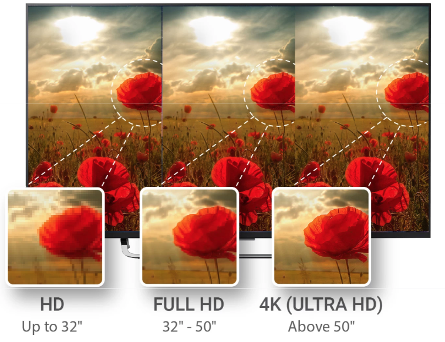
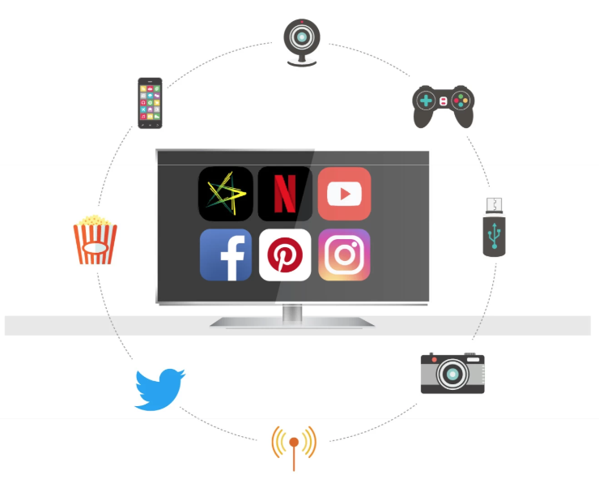
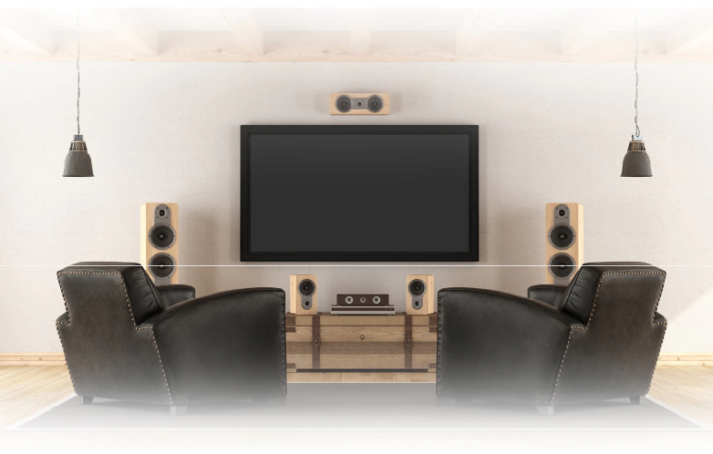
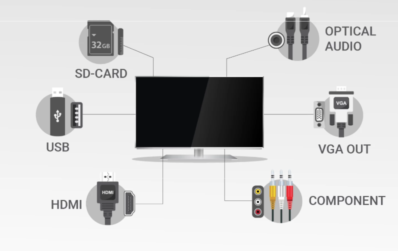

Screen size

Up To 81 cm (32)
If HD content (720p) is what you primarily watch, choose a 81 cm (32) TV or one with a smaller screen. Maintain a viewing distance of at least 5 feet for the best experience.
81 cm (32) - 127 cm (50)
If you prefer Full HD content (1080p) from DTH services and Blu-ray players, choose a TV with a screen size between 81 cm (32) and 127 cm (50). In this case, maintain a minimum viewing distance of 6 feet at least.
Above 127 cm (50)
For making the most out of 4K/Ultra HD content, choose a TV with a screen size that's above 127 cm (50) with a minimum viewing distance of 8 feet. Since 4K content is not widely available, ensure that your content sources are in place.
Which screen size fits your need?
Display Resolution

4K (Ultra HD)
- Ultra HD or 4K TVs deliver the minutest of visual details and color variations, offering the highest image quality out of all the 3 types of resolutions.
- TVs with a screen size of 127 cm (50) and above do a great job of portraying 4K content.
- 4K TVs essentially quadruples the resolution offered by Full HD TVs with a stunning resolution of 3840x2160 pixels.
Full HD
- This will give you significantly better clarity over an HD TV, all the way up to screen sizes of 127 cm (50).
- You get a crisper 1920x1080 pixel resolution.
HD
- On a tight budget? Looking for a smaller screen size? Opt for an HD TV.
- YAn HD capable TV produces a resolution of about 1280x720, which is just about enough to watch DTH or regular over-the-air TV programming.
What is the resolution you'd like?
Smart TV

Content Discovery
Android TV makes finding and watching new and exciting content on your smart TV simple. Its user-friendly interface is populated with suggested content that you may find interesting.
Voice Search
Use this option by pressing the TV remote's ‘microphone voice search button’ and stating the name of the programme you want to watch.
Google Assistant
Find and watch shows quickly and get instant answers to queries by using this feature.
Gaming
Enjoy playing single-player, multiplayer, online, or offline games.
Apps & Content
Enjoy a wide variety of content through popular apps, like Netflix, Amazon Instant Video, BBC iPlayer, etc., right from the home screen conveniently.
Built-in Chromecast
Cast your favourite shows, movies, music, and sporting events directly from your Android mobile device onto your big-screen Android TV using the local Wi-Fi network.
Are you looking for a smart TV?
Sound Quality

Audio Output
Check the sound rating in watts. A 15 W speaker system is ideal for up to 101.6 cm (40) TVs. Go with a 20-25 W rated sound system for larger TVs for enough headroom for those movie marathons. Some TVs also come with in-built woofers which provide a pronounced bass response.
Speaker Positioning
Speakers are mounted either at the bottom or the front. Front-mounted speakers offer the best quality, but the current collection of thinner-frame TVs position the speakers at the bottom. In that case, mount it on a wall for sound waves to move freely.
Sound Customization
Not all rooms and environments are the same. TVs with surround-sound modes and graphic equalizers allow you to fine-tune the sound output.
What are your audio preferences?
Sound Quality
Audio Output
Check the sound rating in watts. A 15 W speaker system is ideal for up to 101.6 cm (40) TVs. Go with a 20-25 W rated sound system for larger TVs for enough headroom for those movie marathons. Some TVs also come with in-built woofers which provide a pronounced bass response.
Speaker Positioning
Speakers are mounted either at the bottom or the front. Front-mounted speakers offer the best quality, but the current collection of thinner-frame TVs position the speakers at the bottom. In that case, mount it on a wall for sound waves to move freely.
Sound Customization
Not all rooms and environments are the same. TVs with surround-sound modes and graphic equalizers allow you to fine-tune the sound output.
What are your audio preferences?
Connectivity

USB Port
A USB port is very handy if you want to play content directly from pen-drives and external hard drives on your TV. At least 2 ports are recommended.
HDMI Port
Most LED TVs come with at least 2 HDMI ports - for your HD set-top box and Blu-ray/DVD player. A couple more ports will ensure that you aren't left high and dry after buying that shiny new gaming console.
SD Card Slot
Not a common sight, but it can be useful for DSLR users. The slot lets you skip the step of shifting content to a pen-drive for viewing your vacation photos on the big screen.
Optical Audio
If you plan to connect your TV to an external audio system, we suggest you look for TVs with the digital, optical audio-output provision as well.
Component Port
Still have an old DVD player? If you need to connect older-generation devices, look for component ports and 3.5-mm audio-out ports.
VGA Out
Want to connect your old laptop to your TV? Since most of the old ones have VGA ports, you’ll need a VGA input-port on the TV.
What are some connectivity options you're interested in?